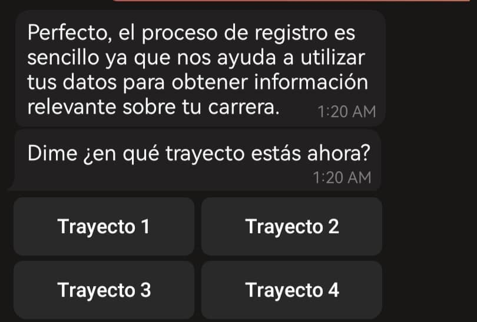
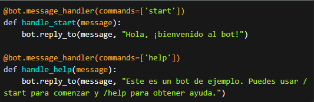
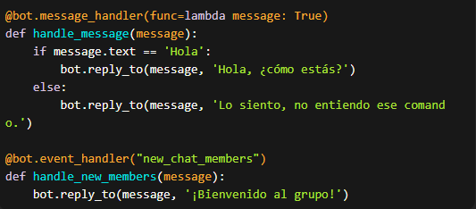

Introducion
.png)
Guia
Dasarrollo
Conoce mas sobre el proyecto
visitando nuestro bot
Introducion
Guia
Dasarrollo

Bienvenido al manual interactivo diseñado para brindarte una guía completa y detallada sobre el uso y funcionamiento de nuestro chatbot. Este manual está diseñado para ayudarte a aprovechar al máximo todas las capacidades y características de nuestro chatbot, brindándote una experiencia didactica.
¡Comienza a descubrir todo lo que nuestro bot podrá hacer por ti mediante esta guia!
Proporcionar instrucciones claras y detalladas sobre cómo acceder e interactuar con el bot.
Proporcionar instrucciones paso a paso y capturas de pantalla cuando corresponda, para guiar a los usuarios a través de los procesos y procedimientos descritos en el manual.
Incluir un índice o tabla de contenido detallado al comienzo del manual, para que los usuarios puedan acceder rápidamente a secciones específicas que les interesen.
Incluir consejos, sugerencias y mejores prácticas para optimizar la experiencia del usuario al interactuar con el chatbot y obtener resultados eficientes.
Comprender los conceptos fundamentales y la lógica de funcionamiento del chatbot de Telegram.
con las funcionalidades y características específicas del chatbot
a acceder y utilizar el chatbot de Telegram de manera efectiva.
los conocimientos adquiridos en el manual para optimizar la interacción con el bot y obtener resultados eficientes
la eficacia del manual interactivo mediante la retroalimentación y comentarios de los usuarios, y utilizar esa información para realizar mejoras en el manual.
utilizando el lenguaje de programacion python, en un IDE conocido como Visual Studio Code mediante la libreria pytelegrambotapi y el token proporcionado por el botfather de Telegram.
puedes dirigirte al buscador de telegram y escribir "ing scott", scaneando su codigo QR o en su defecto por el nombre de usuario.
una vez localizado el bot, lo siguiente sera registrarte, se te pedira la seccion y el trayecto cursante para dicho registro
actualmente, cuenta con los horarios de cada traecto cursante de la universad en el area de informatica, el reglamento y la malla curricular de la carrera, posteriormente se añadiran mas opciones

la interfaz y el menu de opciones es muy facil de comprneder, donde cada numero representa una peticion al bot y este la ejecuta.
una vez desplegado el menu, podras escoger entre las opciones disponibles, en este caso se usa el horario de clases como ejemplo

Abre Telegram y busca al bot llamado "BotFather".
Inicia una conversación con BotFather y sigue las instrucciones para crear un nuevo bot.
Una vez creado, BotFather te proporcionará un token único para tu bot. Guárdalo, ya que lo necesitarás más adelante.
Importar la librería y configurar el bot: En tu script de Python, importa la librería pyTelegramBotAPI y configura tu bot utilizando el token obtenido en el paso anterior.

Definir los comandos y respuestas del bot: Puedes definir los comandos que deseas que tu bot reconozca y las respuestas que dará a cada comando. Aquí tienes un ejemplo básico:
Manejar mensajes y eventos: Además de los comandos, puedes manejar otros tipos de mensajes y eventos. Por ejemplo, puedes responder a mensajes de texto simples o capturar eventos como el ingreso de un nuevo usuario al chat. Aquí tienes un ejemplo básico:
Iniciar el bot: Finalmente, inicia el bot para que comience a escuchar y responder a los mensajes. Agrega el siguiente código al final de tu script:

Ejecutar el script: Guarda tu script con la extensión ".py" y ejecútalo desde la línea de comandos. Asegúrate de tener tu bot en Telegram y envíale algunos mensajes para probar su funcionamiento.
Del inglés Application Programming Interface. Interfaz de Programación de Aplicaciones. Una serie de rutinas usadas por una aplicación para gestionar generalmente servicios de bajo nivel, realizados por el sistema operativo de la computadora
Datos almacenados en una computadora que pueden ser accesados y manipulados fácilmente; piense en un gran gabinete físico con muchas etiquetas con archivos de información relevante.
Buscador (motor de búsqueda, search engine) de la empresa Microsoft.
Abreviatura de Internet Relay Chat. Es un servicio basado en el modelo cliente-servidor que permite que múltiples usuarios en red conversen sobre un tema común.
Ordenador que requiere los servicios de otro ordenador. También, programa que requiere los servicios de otros programa. Normalmente, el navegador es un cliente de un servidor de datos.
Las hojas de estilo en cascada (Cascading Style Sheets, CSS) son un lenguaje formal usado para definir la presentación de un documento estructurado escrito en HTML o XML (y por extensión en XHTML).
Un desarrollador web es un creador de páginas web que enfoca su trabajo en el desarrollo interno del funcionamiento de una página web.
Un dominio de internet es un nombre de equipo que proporciona nombres más fácilmente recordados en lugar de la IP numérica. El dominio representa nuestro nombre en internet y es la forma por el cual las personas llegarán a nuestro sitio.
Es la capacidad de un sistema informático de adaptarse a un número de usuarios cada vez mayor, sin perder calidad en los servicios.
Language, hace referencia al lenguaje de marcado para la elaboración de páginas web.
Un hosting es un servicio online que hace que se pueda acceder a tu sitio web en Internet. Cuando obtienes un hosting, básicamente alquilas un espacio en un servidor que almacena todos los archivos y datos de tu sitio web para que funcione correctamente.
Un ordenador en una red. En Internet se usa host para indicar a una máquina conectada a la red (con una única dirección IP). Host es el ordenador anfitrión o servidor y guest, el ordenador huésped o cliente.
La interface de usuarios es el conjunto de elementos que ve la persona que visita tu página Web, desde los colores hasta los botones y el contenido. La idea es que la interface sea amigable con el usuario, incluso que sea atractiva y que invite a navegar. De la necesidad de una buena interface es que se genera la importancia del trabajo de los diseñadores Web.
Telegram es una plataforma de mensajería y VOIP de origen ruso.
Es la abreviación en inglés de Voice over IP (en español, voz sobre IP o voz sobre protocolo de Internet), y se usa para identificar la tecnología detrás de comunicaciones usando voz y vídeo a través de Internet.
Glosario de terminos. https://disenowebakus.net/glosario-diseno-web.php
IA para generar imagenes. https://www.bing.com/images/create/
framework. https://getbootstrap.com/
IDE. https://code.visualstudio.com/
En conclusión, el manual proporciona una guía paso a paso para crear tu propio bot de Telegram utilizando Python y la librería pyTelegramBotAPI. ademas de ello una introduccion y guia sobre el ing scott.
Crear un bot de Telegram utilizando Python puede ser una excelente manera de automatizar tareas, interactuar con usuarios y brindar servicios personalizados. Al seguir los pasos del manual, podrás desarrollar tu propio bot con funcionalidades basicas y adaptarlo según tus necesidades, tambien una breve explicacion de las funcionalidades desarrolladas hasta ahora en el ingeniero scott.
Es importante tener en cuenta que este manual proporciona una introducción básica y los fundamentos para entender y crear una idea al usuario de que puede aportar el bot a la vida universitaria.
Recuerda que la documentación oficial de la librería pyTelegramBotAPI y los recursos adicionales pueden brindarte más detalles y opciones avanzadas para aprovechar al máximo el potencial de tu bot de Telegram.